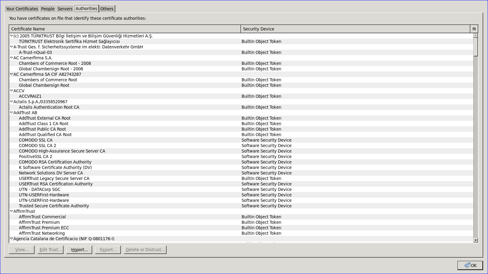

When your browser connects to an https website, it attempts to verify the authenticity of the source. When it can't verify the authenticity of the source you get that 'This Connection is Untrusted' error. See below
Which sites are considered 'trusted'?
Most sites that are run by established companies are trusted. Examples are google, twitter, and facebook.
The mechanism that decides which websites are 'trusted' and which ones are not is the certificate authority system. A full analysis and explanation of that system is beyond my ability to speak with authority on. But a component of it is that your computer stores a list of root certificates that are trusted. Any certificate presented by a website is checked against this list, and if not found to be signed by one of the "trusted certs", it is rejected.
This means that the list of trusted root certificates is important. Firefox manages its own database of certificates, it does not trust the local computer to have a good list. Let's see what certificates are trusted by firefox.

As you can see, there are a ton of certs there from a lot of places it doesn't make sense necessarily to trust by default. A huge problem in the SSL/CA spaec is that if any one of the organizations holding these certs is comprimised, bought, or otherwise decides to be nasty, any site/user combo can be man-in-the-middle'd.
As an experiment, I'm going to remove a few of these from my browser. If I need to check a cert to see if it is trusted by default in firefox, I can launch a window under a different profile which will still have an unchanged trust chain. I'll report back in a week with what I was able to delete and what worked and what didn't.